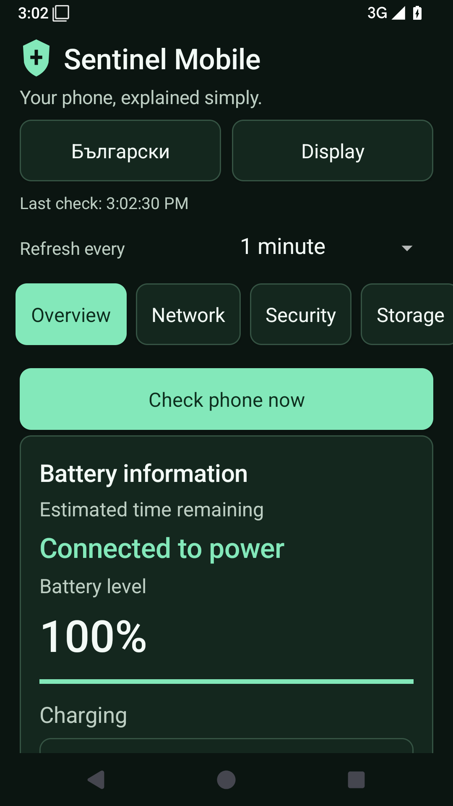

Overview
GPS coordinates, memory, storage, network throughput, alerts, and battery information.
English · Български · Version 1.0.1
An easy-to-read Android app for GPS, battery, memory, storage, network state, device information, and practical security checks. Large buttons, three text sizes, light and dark themes, and offline English/Bulgarian switching.

Приложение за Android с голям текст, удобни бутони и избор между български и английски език. Данните остават на телефона.
What it monitors
GPS coordinates, memory, storage, network throughput, alerts, and battery information.
Battery level, charging status, health, temperature, voltage, and remaining-time calculation after real discharge data is collected.
Active transport, VPN state, metered status, interface inventory, and a shortcut to Android Network Settings.
Screen lock, USB debugging, unknown app install status, VPN, Private DNS, developer options, and Android security patch.
Storage totals plus a direct shortcut to Android Storage Settings.
Manufacturer, model, Android version, build, hardware, and Device Settings shortcut. No installed-app list or personal-file scan.
Desktop companion
Use PC Sentinel NET on Windows for desktop-only monitoring such as TCP connections, listening ports, firewall profile status, Microsoft Defender status, top processes, disk inventory, and hardware/software information.
Android security model
Sentinel Mobile reads local Android system information and does not upload monitoring data.
The app does not request internet access or package-install permission.
Android blocks normal apps from reading global TCP listening ports, firewall profiles, and full process CPU data.